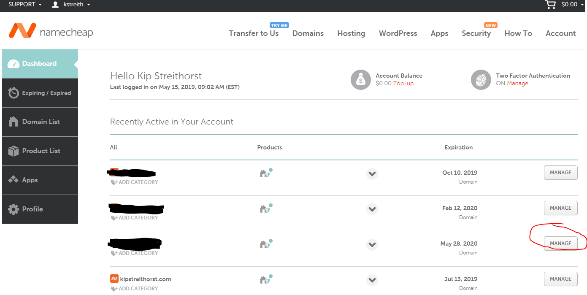
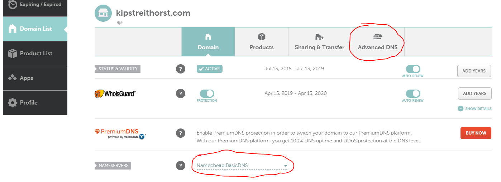
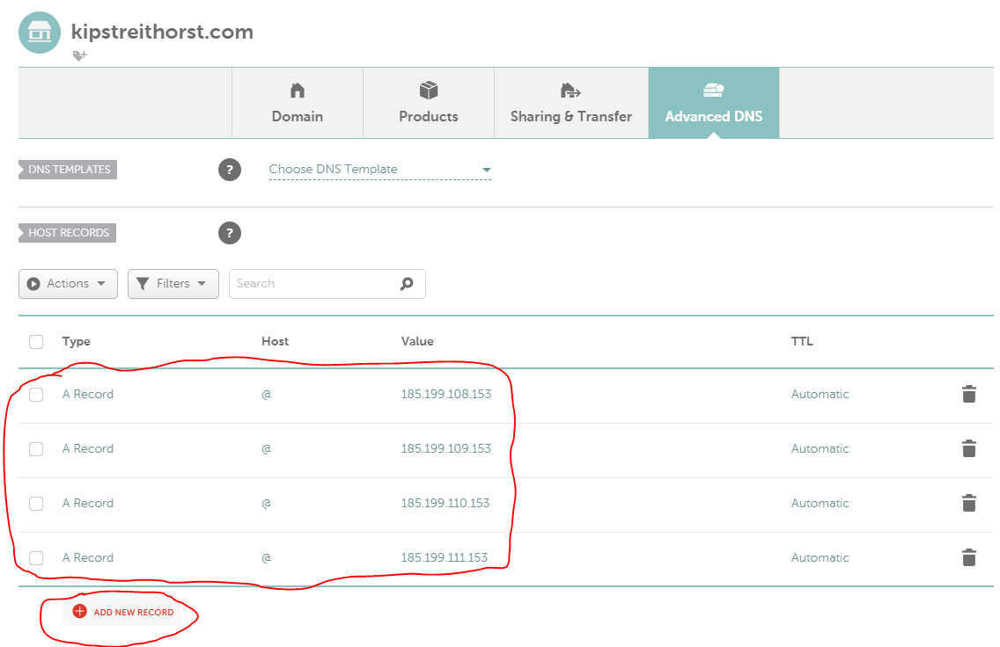
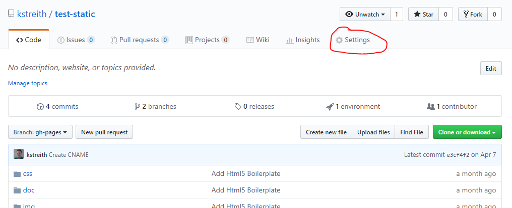
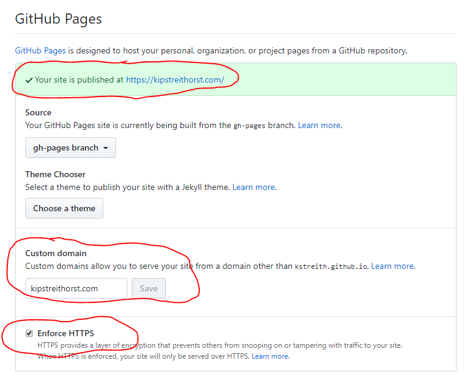

High Level Goals
- Write your HTML, JS, CSS
- Buy a domain and host at https://[myowndomain].com/
Before you can follow along
- To follow along if desired, please do the following:
- Create GitHub Account
- Download and Install Git
- Have a text editor of your choice. I'll use VS Code
Why buy a domain?
- If you run on blog on wordpress or medium, that is part of the url
- If you ever move to another platform, you can't own the migration of users
- It's how the web was intended
- You can move domains between registrars, you can move the physical server between platforms
- For the best long-term benefits, buy your own domain
Why run your own server?
- You really shouldn't run your own server
- You likely don't need a server at all
- Let's find a way to host content for free or nearly free
Why write your own HTML, JS and CSS?
- You can if you want
- I find coding my own site a useful playground to learn
- Feel free to use static generation tools that have pre-built templates
What happens when you visit a site?
- Browser locates the DNS record for the domain
- Browser then contacts the server identified by the DNS record
What is DNS?
- Domain Name System
- Network communication occurs via IP addresses
- Either IP V4 (185.199.110.153) or IP V6 (2001:4860:4860::8888)
- DNS is used to convert names (e.g. google.com, itsnull.com) into IP addresses
How do I serve up HTML, CSS, JS content?
- Allocate a server somewhere, install software, manage it, patch it, etc.
- Or, use hosting services.
Host content using GitHub Pages
GitHub Pages - Let's get started
- Create GitHub Account
- Download and Install Git
GitHub Pages (cont.)
- Create new GitHub repository w/ README
- Clone that repository locally
GitHub Pages (cont.)
- Create new branch gh-pages
git branch gh-pages
git checkout gh-pages
GitHub Pages (cont.)
- Create index.html, paste following content in:
<!doctype html>
<html lang="en">
<head>
<meta charset="utf-8">
<meta name="viewport"
content="width=device-width, initial-scale=1">
<meta name="description" content="Hello world">
<title>My first page</title>
</head>
<body>
<h1>Hello from GitHub Pages!</h1>
</body>
</html>
GitHub Pages (cont.)
- Add and commit index.html
git add *
git commit -m "Add initial page"
GitHub Pages (cont.)
- Push index.html to GitHub, first time only
git push --set-upstream origin gh-pages
Later, only need
git push
GitHub Pages (cont.)
- View it in a browser
- Go to https://[githubusername].github.io/[repo-name]/
Make some changes
- Edit index.html, change message inside <h1></h1>
git add *
git commit -m "My first change"
git push
Refresh the browser
Congrats!
- You just pushed custom content to the web
- It cost you $0 dollars
What Now?
- Can I host this at my own site? e.g. http://itsnull.com/
- Can I add JS, CSS?
- Do I have to hand author everything on my site?
- Do I have to use GitHub Pages?
What are static sites?
- Static site - The HTML, CSS and JS are returned as-is from the server
- That's it - that's the entire definition
- You can use tools to pre-generate the content, e.g. like a compiler
- Once JS is running, it can do all kinds of things
- JS can make AJAX calls to fetch data and dynamically render markup
Why static sites?
- Every web server on any OS can host static files
- They are extremely portable to hosting providers (AWS S3, Azure Blob Storage, Netlify, CDNs, etc.)
- They are extremely cheap for webserver to serve, simply return file on filesystem
Why static sites? (cont.)
- You can still call api endpoints using JS, but now those api endpoints are fully de-coupled from front-end and re-usable
- You can use any tool to generate them (either completely manual or use static site generation tools)
Why static sites? (cont)
- Does your site really change every minute? every hour?
- Likely it's once a week, once a month, maybe once a day
- You can run continous deploy systems to auto-build your site and deploy static content when it changes
Static Site Example (cont.)
Custom Domain
- Want your own custom domain, e.g. itsnull.com?
- Each part of api.itsnull.com is different part of a domain
- com is the gTLD - Generic top-level domain
- itsnull is the domain that you purchase
- api is a sub-domain, it can be pointed to a different IP address than itsnull
- You could have many subdomains, e.g. blog.itsnull.com and games.itsnull.com
What are gTLDs?
- Generic Top-Level Domain
- Common ones are: .com, .net, .org, .mil
- Each may have it's own restrictions, e.g. .uk, .mil
- They are managed by ICANN
- Thousands of new ones are being approved, e.g. .art, .io, .club
- Each has it's own prices
Domain Registrar
- Once you've picked the gTLD you are using
- You simply lease the domain using a domain registar
- Domain registrators are contracted by ICANN
- NameCheap, GoDaddy
- Each registar charges differently
Domain Registrar Cont.
- Domain registrar maintains the official DNS records for your domain
- DNS records are cached throughout the internet, OS, browser
- Changing DNS is not immediate
- https://www.whatsmydns.net/
Domain Registrar Cont.
- Registrar typically runs a nameserver for you
- Registrar points to authoritive nameserver
- You can delegate to another nameserver (e.g. Azure, AWS, etc.)
- The nameserver maintains the actual DNS records (A, CNAME, etc)
Domain Registrar Cont.
- When you register a domain, personal information is put into WHOIS registry
- With GDPR, legality of that is being figured out
- Some registrars will hide personal information for free, e.g. NameCheap
Buy your own domain and come back
- Go buy a domain at a domain registrar
- Just need registrar ability to set custom DNS records (e.g. A, CNAME)
- Once you have a domain, I will show how to configure the DNS
- To follow along, use and login to NameCheap
Register DNS to use GitHub Pages (cont.)
- Now that you are logged into NameCheap
- Find your domain and click Manage
- You should have already purchased the domain, if not, do that now

Register DNS to use GitHub Pages (cont.)
- Check that the NameServer is set to Namecheap Basic DNS
- Click on Advanced DNS

Register DNS to use GitHub Pages (cont.)
- Use button to add a new DNS record of type A
- Go ahead and add 4 A Records with a host of @ pointing to GitHub's IP addresses. See GitHub Docs

Register DNS to use GitHub Pages (cont.)
- That was the DNS portion, you still need to configure GitHub Pages
- Login to GitHub and go to your repository from earlier
Register DNS to use GitHub Pages (cont.)
- Once logged into GitHub, go to your repository
- Click the Settings tab

Register DNS to use GitHub Pages (cont.)
- Scroll down on settings page to GitHub Pages section
- Enter the name of your custom domain.
- Save settings and page will now be available in the browser using http://[customdomain]/

Troubleshooting
- Only HTTP will work properly
- If you access using https://[customdomain]/, you will get a certificate warning
- GitHub is generating a Let's Encrypt certificate for your site in the background
- Proper certificate generation can take up to 24 hours
- Click the Enforce HTTPS checkbox, it's best practice
Congratulations!
- You now have a custom site hosted at your own domain.
- You are only paying for the domain, e.g. less than $20 a year.
- You site is secured with HTTPS and SSL.
How do I create lots of pages?
- You can hand author each page, or...
- Use a static site generator.
- There are lots of them, see
- I'm going to show the most popular .NET one, Wyam
Why Wyam?
- I'm a .NET stack developer, I want to be productive in my hobby time.
- Wyam uses Razor syntax, Nuget packages, allows unit testing of custom modules
- Wyam is highly configurable
- Wyam uses .NET Core 2
- Entire project is open-source at https://github.com/Wyamio.
How to get started with Wyam
How to get started with Wyam (cont)
How to get started with Wyam (cont)
- To recipe or not to recipe
- I prefer building my config from the ground up
- But Wyam recipes provide quickest new project experience
Wyam - Blog recipe
- Create a blog
wyam new --recipe Blog
- Build the site and run with a test server locally
wyam -p -w
- Build the final static output to deploy
wyam
Wyam - Custom pipelines
- Need a config.wyam, this is a C# script like file with special syntax
- Need an input folder
- Wyam will build to the output folder
Wyam - Custom pipelines (cont)
#n Wyam.Yaml //pulls in Nuget package
#n Wyam.Razor //pulls in Nuget package
#n Wyam.Markdown //pulls in Nuget package
Settings[Keys.Host] = "host.com"; //global dictionary
Pipelines.Add("PresentationPages",
ReadFiles("presentations/*.md"),
FrontMatter(Yaml()),
Markdown(),
Razor().WithLayout("/_PresentationLayout.cshtml"),
WriteFiles(".html")
);
Wyam - Custom pipelines (cont)
- Each Pipeline has a name and is sequence of modules
- Each module takes an list of Documents as input and generates a list of Documents as output
- A document is content and metadata about the content
Wyam - Custom pipelines (cont)
- Modules are small and composable
- There are lots of built-in modules
- You can code your own modules in C# and then reference the assemblies.
- You can write unit tests for custom modules.
Wyam - Templates
- There is a built-in Razor() template
- It will render a document using the given Razor template.
- There is a built-in Markdown() module that parses Markdown and generates HTML.